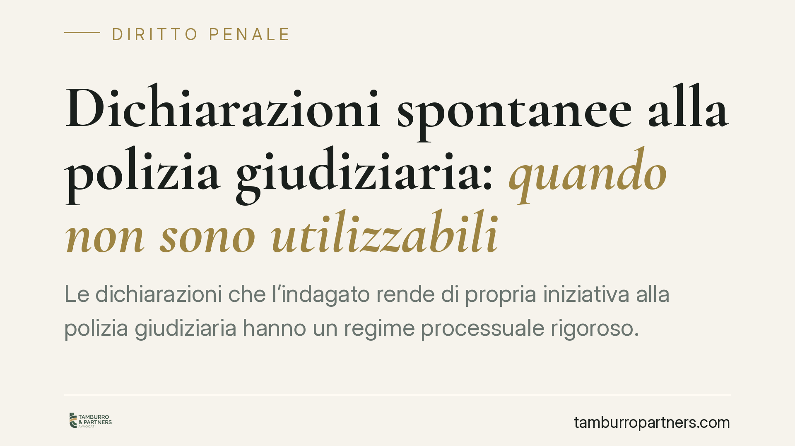

Dichiarazioni spontanee alla polizia giudiziaria: quando non sono utilizzabili
Le dichiarazioni che l'indagato rende di propria iniziativa alla polizia giudiziaria hanno un regime processuale rigoroso. Secondo un orientamento di legittimità ribadito di recente dalla Cassazione, quando tali dichiarazioni non sono documentate e sottoscritte secondo le forme di legge la loro utilizzabilità nel processo è seriamente compromessa. Verbalizzazione e firma non sono formalismi: sono garanzie a tutela di chi parla.

Il contesto
Capita spesso che, durante un controllo o un intervento, una persona sottoposta a indagini dica qualcosa alla polizia giudiziaria senza essere formalmente interrogata. Sono le cosiddette dichiarazioni spontanee: affermazioni rese di propria iniziativa, non sollecitate da domande.
Una recente pronuncia della Corte di Cassazione penale è tornata sul punto, affrontando il caso di dichiarazioni spontanee semplicemente riferite dalla polizia all'interno della comunicazione della notizia di reato, senza un verbale dedicato e senza la firma dell'interessato. Il principio affermato è netto: in assenza delle forme di documentazione previste dalla legge, quelle dichiarazioni non possono fondare la decisione.
*(Gli estremi esatti della sentenza sono in corso di verifica redazionale: il contributo richiama l'orientamento, non un singolo numero di deposito.)*
Inquadramento normativo
La disciplina di riferimento è l'art. 350 c.p.p., che regola l'attività della polizia giudiziaria nei confronti dell'indagato. La norma distingue due situazioni diverse:
- i commi 1-6 riguardano le *sommarie informazioni* assunte dalla polizia, che richiedono la presenza del difensore;
- il comma 7 disciplina invece le *dichiarazioni spontanee*, cioè quelle rese liberamente dall'indagato anche senza difensore.
Il punto cruciale è la documentazione. Gli atti della polizia giudiziaria devono essere verbalizzati secondo le regole generali degli artt. 357 c.p.p. e 134 e seguenti c.p.p., che prescrivono la redazione del verbale e, di norma, la sottoscrizione di chi ha reso le dichiarazioni. È su queste norme, non su una formula interna all'art. 350, che poggia l'obbligo di forma.
Quando questo apparato documentale manca, la dichiarazione non entra correttamente nel fascicolo e non può essere utilizzata contro chi l'ha pronunciata.
Perché verbale e firma sono garanzie
È utile chiarire perché la Cassazione dia tanto peso a questi requisiti. Il verbale serve a fissare *che cosa* è stato detto, *quando* e *in quali condizioni*. La sottoscrizione consente a chi parla di prendere atto del contenuto e di assumersene la paternità consapevole.
Senza questi passaggi, resta solo la ricostruzione fatta dall'operatore di polizia: una sintesi non controllabile, esposta a fraintendimenti e priva di una verifica diretta da parte dell'interessato. Verbalizzazione e firma, quindi, non sono burocrazia: sono lo strumento che rende affidabile e difendibile ciò che viene attribuito all'indagato.
Inutilizzabilità patologica e fisiologica
Per comprendere la portata della questione occorre distinguere due categorie.
L'inutilizzabilità fisiologica riguarda atti validamente formati nelle indagini ma che, per regola generale, non possono essere usati nel dibattimento: è un limite legato alla fase processuale e in parte superabile, ad esempio con il consenso delle parti.
L'inutilizzabilità patologica colpisce invece atti formati in violazione di divieti o requisiti essenziali. In questo caso il vizio è più grave: tocca la legittimità stessa dell'atto e, secondo l'orientamento richiamato, non è sanabile nemmeno dal consenso della difesa all'acquisizione.
Secondo la pronuncia, le dichiarazioni spontanee non documentate rientrano in questa seconda categoria. Non si tratta di un difetto formale recuperabile: l'atto è privo dei presupposti per entrare nel processo.
Implicazioni pratiche
Per chi è indagato, questo significa che un'ammissione resa "a caldo" e non verbalizzata regolarmente non può trasformarsi automaticamente in prova a carico. Per la difesa si apre uno spazio di controllo importante: verificare come la dichiarazione sia stata raccolta e documentata.
Per la polizia giudiziaria e l'accusa, la conseguenza è l'esigenza di rigore nella fase di raccolta: una dichiarazione utile ma mal documentata rischia di essere processualmente inservibile.
Cosa fare in concreto
- Verificare, in ogni fascicolo, se le dichiarazioni dell'indagato risultino in un verbale autonomo e non solo riferite nella notizia di reato.
- Controllare la presenza della sottoscrizione dell'interessato e l'indicazione di luogo, data e modalità di raccolta.
- Eccepire tempestivamente l'inutilizzabilità delle dichiarazioni prive dei requisiti di documentazione, indicando le norme violate.
- Distinguere con precisione tra vizio patologico e fisiologico, perché cambiano i margini di recupero dell'atto.
- È opportuno che l'indagato sia assistito da un difensore fin dalle prime fasi, per valutare consapevolmente ogni dichiarazione resa.
Disclaimer
Contributo informativo a cura di Tamburro & Partners - Avv. Giuseppe Tamburro. Non costituisce parere legale.
Ogni condominio ha una storia a sé.
Se gestisci un'amministrazione e vuoi un confronto su una specifica questione condominiale, scrivi allo studio. Ti rispondiamo entro un giorno lavorativo.